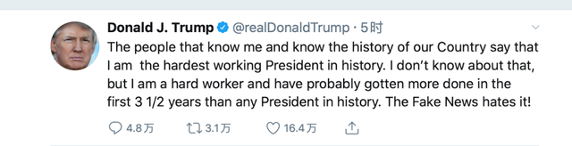
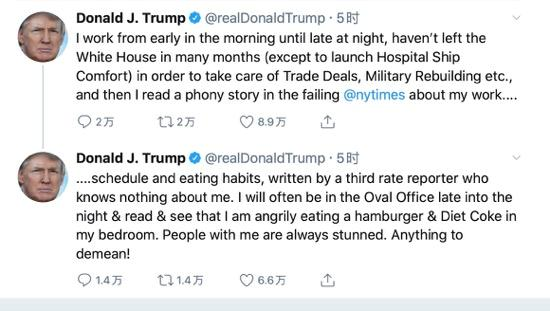
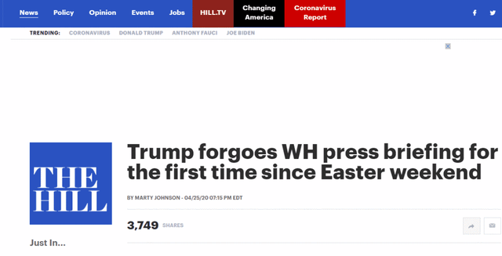
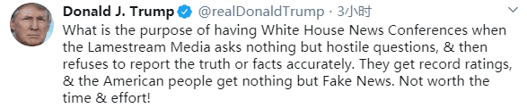

继续怒怼“假新闻”，特朗普称自己是史上最勤奋总统，简报会不值得
我原本不知道，但我确实是一个勤奋的人，在头三年半中完成的工作，可能比历史上任何一位总统都要多。”
当地时间4月26日，白宫连续第2天没能举行每日疫情简报会，但这并未影响到美国总统特朗普的“信息发布”，26日当天下午，特朗普发布了数条推特，继续怒怼“假新闻”，同时表示有人说自己是“历史上最勤奋总统”。此前一天，特朗普曾发推称“简报会不值得花费时间与精力”。
特朗普当天写道：“了解我并且了解我们这个国家历史的人说我是历史上最勤奋的总统。我原本不知道，但我确实是一个勤奋的人，在头三年半中完成的工作，可能比历史上任何一位总统都要多。假新闻（媒体）讨厌这个！”
特朗普推特截图
他接着写道，“我从清晨工作到深夜，为了照顾贸易协议、军队重建等，已经好几个月没有离开白宫了（除了为了海军医院船“安慰号”送行外），然后我读了一个假故事：失败的《纽约时报》上有关我的工作时间表和饮食习惯的报道，由一位不了解我的三流记者撰写的。我经常会在深夜里到椭圆形办公室、看书、在卧室里愤怒地吃着汉堡喝着健怡可乐。和我在一起的人总是很震惊。这有什么可指摘的！

特朗普推特截图
特朗普发推：简报会真不值得！
白宫没有举行疫情简报会这天，特朗普发推：不值得花费时间与精力！
据《国会山报》25日报道，自复活节（4月12日）周末以来，特朗普周六首次没有与新冠病毒应对工作组在白宫举行新闻简报会，此举可能预示着总统在未来几周内露面的频率将发生变化。

《国会山报》报道截图
报道介绍称，自3月份起，特朗普和副总统彭斯共举行过近50场白宫新闻简报会，向全国通报政府对新冠肺炎疫情的持续应对举措。然而，25日的简报会没有像往常一样举行。值得一提的是，此前一天的简报会也“异常简短”，时长约为25分钟。据悉，特朗普上周五的简报会大约持续了1小时45分钟。
美国新闻网站Axios周五（24日）援引消息人士的话称，特朗普计划缩短疫情简报会时长，并减少露面。美国政治新闻网站“Politico”则报道称，白宫冠状病毒应对工作组可能举行了非公开会面，但没有举行简报会。
《国会山报》注意到，缩短简报会时长及25日未举行简报会，这些变化均出现在特朗普周四（23日）发表争议言论之后。
在23日的简报会上，美国国土安全部（DHS）科学与技术局高级官员比尔布莱恩表示，样本实验表明，（一定的）阳光、高温或潮湿条件对病毒（繁殖）不利。布莱恩还说，消毒剂能在5分钟内杀死冠状病毒，异丙醇能在30秒内杀死病毒。
随后，特朗普表示：“消毒剂在1分钟内就把它（病毒）灭了。有没有一种方法，我们可以通过注射或者说类似于清洗（的方法）来做类似的事情……尝试一下这样，可能会很有趣。”
特朗普有关“注射消毒剂”的言论此后引起一些医学专家的质疑。白宫发言人和特朗普本人24日先后出面解释，特朗普表示自己只是在表达“讽刺”。不过美国舆论却不买账，纷纷摆出证据，强调总统提这一建议时是严肃认真的。
关于简报会的相关情况，当地时间25日下午，白宫新闻秘书凯莉·麦克纳尼曾简短地谈及这一话题，但没有进一步透露简报会是会停止还是减少。“听着，我把这个问题留给总统，这完全是他的决定，但我相信，当总统直接向美国民众发表讲话时，他的状态是最好的。”
《国会山报》称，麦克纳尼发声之后，大约过了45分钟，特朗普也在推特上就简报会相关情况发表了自己的意见。
特朗普写道，“当差劲的媒体只会问一些充满敌意的问题，然后拒绝报道真相与准确的事实，那么召开白宫新闻发布会的目的又是什么？”“他们获得了创纪录的收视率，而美国人一无所得只收到假新闻。真不值得花费这些时间与精力！”

（特朗普推特截图）
来源：综合环球网